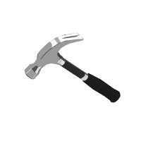

Experience
Deloitte
Software and Technology Intern
I am an incoming software and technology intern at Deloitte for the summer of 2025, where I will be working with their National Federal Tax Services, Partnership Solutions Group (NFTS PSG).
June 2025 - September 2025

JLab Sensing
Software Research Intern
- Engineered a robust data pipeline for a greenhouse temperature monitoring system using C/C++, integrating Git for version control and adhering to Agile methodologies throughout the development lifecycle.
- Achieved a 90% reduction in power consumption by optimizing system architecture and presenting results to the PI and team.
- Created a custom temperature interface library and I2C communication library, ensuring rapid and reliable data transmission.
- Architected a scalable, high-performance communication framework that significantly enhanced data transmission speed and reliability, leveraging protocols such as UART, SPI, I2C, and ModBus to ensure seamless integration and efficient communi- cation across hardware components.
June 2023 - September 2023
UCSC - Baskin School of Engineering
Engineering Course Staff/Lab Instructor
Courses Taught: CSE 100 - Logic Design, ECE 167 - Sensing Technology, CSE 12 - Assembly Languages
- Provided personalized guidance and conducted unit testing for lab checkoffs to over 800 students in subjects such as Logic Design, Assembly Language, and Sensing Technology.
- Assisted students in mastering technical topics, including Structural Verilog, RISC-V assembly programming, hardware inter- facing, and general scripting, ensuring they gained practical, hands-on experience across diverse engineering disciplines.
- weekly guided lab sessions on topics such as IDEs, Git, logging, testing, and Logic Design.
January 2023 - June 2024